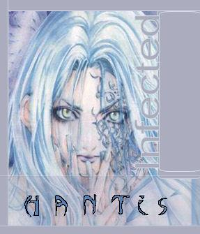
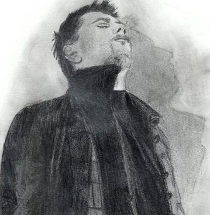

Forums galactiques > Assemblée Galactique : diplomatie officielle > Un Ricard, ça va. Un Picard...
Pages : 1
| Larry Winthorpe Respect diplomatique : 2277  17/02 ETU 16:31 | Score : 20 Détails Alors que les débats de poursuivaient concernant les intentions des Insurgés, le projet Arche, et la légitimité des Commandements, Monty Hall mourait.
Il n'était de service sur le bunker 12 du Portail Nord-Ouest que depuis trois mois, mais un tir de particules ioniques ne regarde pas au CV de ses victimes. "Faudrait quand même que quelqu'un fasse quelque chose..." <Commandants des Exilés, écoutez-moi, je vous en prie. A l'heure où je vous parle, le commandant Jean-Luc Picard, que vous êtes nombreux à connaître au moins de réputation, qui était depuis de nombreux jours déjà systèmatiquement en position sur les PC1 de la plupart des systèmes des Insurgés, est passé à l'attaque. Le commandant Check aura eu au moins cette utilité : il pourra vous certifier que le Portail Nord-Ouest, planète du PC1 du système 0 est à présent entre les mains de l'agresseur. Le Borg "repenti" a également, depuis quelques heures, commencé à bombarder de tirs ioniques certains systèmes de plusieurs de nos membres. Outre sa présence sur nos PC1 que nous jugulions jusqu'ici dans la mesure du possible, ce commandant détruit donc à présent nos flottes, et tente une invasion du système 0. Je n'ai nul besoin de préciser que tout cela se produit sans préavis de sa part, bien sûr, ni ici, ni par MP. La riposte est en cours, bien entendu, mais j'aimerais que vous ne vous étonniez pas trop si la partie de ping-pong dans le système 0 reprend dans les jours à venir... En outre, la guerre qui s'annonce risque d'être d'une ampleur peu commune. Les victimes seront certainement nombreuses suite à cette agression méprisable. J'annonce donc dès à présent que les Insurgés s'excusent d'avance pour les dommages collatéraux à venir chez les commandants présents dans les systèmes en guerre. La faute en reviendra à l'agresseur. Toutefois, un remboursement sera bien sûr possible si ces commandants en font la demande. Nous ne faisons actuellement que répondre à cette attaque dont le but, bien qu'encore inconnu, me paraît être la simple soif de pouvoir et la rancune envers Aurora jamais enterrée par Jean-Luc Picard. En effet, je doute que ce commandant ait, en s'adonnant à nouveau à de telles exactions, des visées humanitaires. Soyez heureux, vous qui prônez l'action contre les Insurgés, c'est chose faite ! Bien fait, ils n'avaient qu'à pas être, heu... puissants, ouais... hum. En attendant, cette attaque est scandaleusement injustifiée, et injustifiable d'ailleurs, et j'espère que chacun le réalise. Pour finir, j'exige de la part des membres du Hellfire Club un point de vue officiel sur ces attaques. Car pour ceux dont les mécanoïdes rouillent un peu trop, Jean-Luc Picard et Hachi font à présent partie du Hellfire Club. Les Insurgés ne sont actuellement en guerre de représailles que contre Jean-Luc Picard. Naïveté, peut-être, mais nous aimerions croire qu'il a agi seul... Je demande au reste du Hellfire Club de venir déclarer ici-même leur position face à ces attaques gratuites. Merci de votre attention, commandants.> | ||
| Mansfeld Respect diplomatique : 4380  17/02 ETU 16:54 | Score : 5 Détails L'arroseur arrosé... et l'arrosé arroseur. L'ambassadeur d'Alfa Deimos eut du mal à contenir un sourire sarcastique.
" Nous déclarons pour notre part notre neutralité impartiale dans ce conflit. Nous ne soutenons pas les actions du commandant Picard, comme nous n'avons jamais soutenu les actions des Insurgés. Nous pensons qu'ils doivent laver leur linge sale en famille, sans chercher à impliquer d'autres nations dans leur belligérance. Nous invitons les nations démocratiques et républicaines à se déclarer neutres, et à se consacrer à la reconstruction de la République, institution on ne peut plus crédible et nécessaire au vu du chaos généré par l'hégémonie des Insurgés et des jalousies qu'ils suscitent. Seules des valeurs fondées sur le Respect, la Paix et la Civilisation peuvent nous préserver de l'apocalypse des intérêts des plus puissants et de leurs lubies bellicistes." | ||
| Ellys Respect diplomatique : 1592  17/02 ETU 17:08 | Score : 8 Détails La Nation Baphodyenne se déclare également neutre face à ce conflit.
Cela ne sous entend en aucune manière le moindre regard bienveillant concernant les actions du Commandant Jean Luc Picard, cela signifie simplement que ce que votre politique parfois contestable engendre nous importe peu. En revanche et pour que les choses soient parfaitement limpides dans vos esprits, les systèmes Baphodyens et par extension, les systèmes Démocrates ne sont en aucune manière une base avancée pour les tirs de BHA à venir. Autrement dit, bien que neutres dans ce conflit, nous ne tolèreront aucune présence bélligérente dans l'un des systèmes sus-mentionnés. Tenez vous le pour dit. | ||
| Hyacinte Respect diplomatique : 108  17/02 ETU 17:55 | Score : 12 Détails "Poum, palim, paloum, boum, Baouum!!
Très chers confrère de l'Assemblée, hono...rhhaaa" tousse un moment puis reprend la parole "Membre des différentes coalitions, hono.. hé m*^%¤ bref chers Insurgés, je m'exprimes ici en mon nom, et surement en celui du Hellfire. Tout d'abord, oui, JLP et Hachi sont au Hellfire, mais cela fait un moment déjà, il faudrait tenir vos mécas en activité peut-être. La présencee JLP sur les Pc1 de nombres de vos systèmes ne devaient être à l'origine qu'une réponse au déploiement de Kanaxai un peu partout dans la Galaxie, cela a déjà été expliqué il me semble, et si ce n'est pas le cas, maintenant ça l'est. D'ailleurs, nous avons remarqué que depuis hier soir, d'importantes quantités de vaisseaux jujuyens sont présents sur les PC 1 de nombre des systèmes du Hellfire, et d'ailleurs un peu partout dans la Galaxie. Vosu me direz, c'est pour la cartographie. Et là je répondrais, Kanaxai aussi non?? Il vous faut deux cartographes maintenant? Jusque là, ça pourrait encore, je dis bien pourrait, être acceptable. Mais voilà que les flottes de cartographie ont bien évoluées! Car figurez-vous que 200 tirs ioniques ne suffisent pas à les déloger. Décidément, vous croulez tellement sous les richesses que vous envoyerz plusieurs centaines, voir milliers de CLA pour une simple cartographie? ...j'exige de la part des membres du Hellfire Club un point de vue officiel sur ces attaques. "De quel droit exigez-vous un quelconque avis officiel??? L'un de vos dix commandements?? Non, je ne vois préciser cela nul part, pas de ton avis aux insurgés forcément tu donneras ni de obligatirement de tes pensées les insurgés tu informeras. Ainsi, nous ne donnerons aucune position officielle, jusqu'à ce que nous ayons envie de la donner!" Et Hyacinte partit s'assoir, écoutant au loin le bruit des combats spatiaux. | ||
| King Kat Respect diplomatique : 220  17/02 ETU 18:03 | Score : 11 Détails *Tel un minou au aguet, le pas leger et sournois, Hantis s'avanca devant l'assemblée galactique. *
Hantis... "Commandants, Commandantes ..." L'heure du pardon est venue Hantis "Je déclare officiellement entrer en guerre contre Jean Luc Picard ..." tu t'es trompé abruti ! "Ah non!!! s'cusez moi ^^, euh.. donc.. je déclare officiellement ..." tu te répéte "AAAAAH !!! MAIS TA G**** NOM DE D***" *Les commandant regardérent autour du commandant Hantis pour voir a qui il parlait .. * HANTIS !!! "QUOI ??" t'a oublié ta feuille de vigne !! "Q.. MAIS NON JE ... O_o .. MAIS ARRETE DE DIRE NIMP !! " tu es trés sexy hantis "Hein ??? .. mais.. mais il a bu !!!? ... Oh et pis zut, je voulais juste dire que j'entrait en guerre contre les insurgés .. " hantis ... "..." hantis ... tu boude ? (pense: "illuminaton divine.. illumination divine qu'il disait ) *Hantis quitta ensuite l'AG en faisant la moue et en regardant autour de lui pour voir s'il n'y avait personne sur qui se defouler ... * | ||
| Lizaka Respect diplomatique : 2723  17/02 ETU 18:08 | Score : 27 Détails Le Hellfire, la prochaine fois que vous voulez faire la sourde oreille, je vous en prie, n’envoyez pas Hyacinte.
| ||
| Hyacinte Respect diplomatique : 108 17/02 ETU 18:17 | Score : 8 Détails "On fait pas la sourde oreille, on répond poliment à une demande bien moins polie. Chose que tu ne fais que très rarement!
BÂOUUMM Fausse alerte Liz, tu peux arrêter de tenir ta robe, on verra rien cette fois... Tu m'as l'air un peu à cran, surmenage picardien peut-être?" | ||
| Nicanor de Rokha Respect diplomatique : 2498  17/02 ETU 19:09  | Score : 16 Détails Etat Major de l'Armée du Peuple, Planète BOHINA LA ROUGE
RECEPTION D'UNE TRANSMISSION - CODE ROUGE - PRIORITE ABSOLUE Ici ... Amiral Tolenski, commandant la 797e Flotte Rouge du système ... *** Parasites sur la canal holovisé *** Nous sommes attaqués .... par les forces du commandant Jean Luc Picard .... n'avons pas été prévénu ... sommes pris en traitre ... pertes très élévées ... effroyable massacre ... camarades tombent ... champ d'honneur ... gachis inutile ... *** Attention !!! Signal transmission faible *** Nous nous mettons en position de contre-attaque et demandons ... explications sur le champ ... victimes d'un piège odieux ... ne pourrons pas tenir plus longtemps ... L'UNION SOVIETIQUE NOUS VENGERA. POUR LE PEUPLE ! ......................... --- SIGNAL TRANSMISSION INTERROMPU --- | ||
| Edgar Arakkus Respect diplomatique : 1407  17/02 ETU 19:34 | Score : 15 Détails "Bonjour commandants,
Tout d'abord, je tiens à attirer l'attention de toute cette Assemblée sur le nom de cette salle, que je trouve très rigolo. Pas vous? Hum... Passons aux choses sérieuses... Jean Luc, que tu nous attaques est une chose. Mais là j'ai vraiment l'impression que tu as ionisé n'importe qui. J'ai reçu des tirs dans des systèmes qui ne sont même pas à moi (systèmes nataux en plus). Il parait même que t'as ionisé Alfa Deimos! J'avais beaucoup d'estime pour toi, depuis que tu es entré au Hellfire Club, tu t'es bien inspiré de leur amateurisme on dirait... Enfin bon, tu as réussi ton coup dans le Zéro, je n'en attendais pas moins de toi. Et moi qui t'ai cru au moment où tu m'as dit que l'envoi de flottes etait une erreur... Hyacinte, pour répondre a votre question... Nous ne vous demandions des explications que pour savoir où l'on devait envoyer nos flottes... Pas pour vous forcer à prendre la parole (sinon on s'en serait bien gardé)." | ||
| Ellys Respect diplomatique : 1592 17/02 ETU 20:03 | Score : 10 Détails Commandant Picard, peut être avons nous manqué de clareté dans nos propos, le concept de neutralité ne vous étant sans doute pas famillier mais cette attaque visant la Nation Soviétique est absolument inadmissible.
Et que les choses soient claires, la flotte russe ici visée se trouvait seule sur le PC ionisé. Comment comptez vous justifier cela ? J'ose espérer que vous avez là, commandant Picard, une explication rationnelle pour éclairer cette obscure conduite. La Corporation Démocrate entend rester neutre dans ce conflit, ne nous obligez pas à intervenir pour défendre nos peuples respectifs. Menez votre guerre sans nous impliquer. Je fais toute confiance au camarade de Rokha pour vous faire parvenir assez rapidement un chiffrement des pertes occasionnées et j'ose espérer que vous n'avez pas perdu votre sens de l'honneur en chemin et vous engagerez rapidement à rembourser ces dégats comme vous l'avez toujours fait par le passé. Du reste, cela ne vous dispense en aucune façon d'une quelconque justification. Qu'elle se fasse sous le couvert d'une communication par X-com ou publiquement en cette assemblée. Gouverneur Lenka. | ||
| andeman Respect diplomatique : 1393  18/02 ETU 11:52 | Score : 10 Détails Ashaar secoua la tête, moitié souriant moitié navré et excédé
Ha ba mince tient!!! UNE GUERRE! mais quelle surprise vraiment, sisi je vous assure je m'attendais pas du tout depuis quelques temps à un gros défouraillage made in Hellfire, j'en serais presqu'ému, ca faisait si longtemps qu'on avait plus une guerre, que c'est beau ca des gens qui par ennui n'ont rien d'autres de mieux à faire que d'aller tapper. Réaction basique de l'instinct humain. Bon alors maintenant laissez moi deviner l'issu de conflit, vous allez plonger la galaxie à feu et a sang, vous allez nous décimer 30 à 40 milliards d'ames, comme ca nous serons préparé pour la BIG ONE, et tout le monde sera content, mais surtout le MUST de cette guerre c'est que nous n'aurons ni vaincu ni gagnant!! Des morts pour rien, n'est ce pas le comble du luxe et de l'ennui, un claquement de doigts et hop! 20 millions de morts sur le papier! Vous commencez sérieusement messieurs à épuiser la patience dont je suis capable, c'est difficile de qualifier vos attitudes sans devenir vulgaires ou sans que nous nous enflammions, mais nous n'en pensons pas moins Quelque soit vos raisons rien ne justifie cette guerre, faites attention JLP a trop assimiler on fait une indigestion gare à la diarrhée! Alors le point positif dans tout ca,c'est que nos deux petits Reichs vont bien se tapper dessus et trés trés fort, grand bien vous fasse messieurs au moins ca anime un peu la galaxie, mais faites attention que ca ne nous touche pas. Pour notre Part, les Vaarlags ne bougeront pas une fois dans ce conflit, ses motivations sont nauséabondes et servent des causes respectives que nous ne soutenons en aucun cas. Comment pouvez vous alors que nous nous rapprochons vers la fin de tout vouloir encore vous plonger dans la guerre, laissez donc le monde mourrir en paix avec la vague magnétique. | ||
| smileyoyo4 Respect diplomatique : 664  18/02 ETU 13:35 | Score : 3 Détails Sur l'ecran géant de la salle, l'image de Smileyoyo apparut...
La SmilEnterprise se déclare neutre dans se conflit tout comme ses amis de la Corporation Démocrate. Cependant nous n'accepterons pas d'etre attaqué par un des deux camps. Pour ce qui est de notre camarade sovietique, nous le soutenons au maximum dans sa contre attaque. Malgrès notre neutralité nous ne laisserons passer aucune attaque. | ||
| jean luc picard Respect diplomatique : 595  18/02 ETU 22:17 | Score : 17 Détails Un homme de taille importante s’avança. Sa visite était plus qu’attendu, il porté l’ étendard de Jean Luc Picard. Il pris la parole avec d’énorme difficulté.
«Commandants, commandantes, bonjour. L’empire dont je fait actuellement partie, a été victime d’un virus. Je ne parle pas d’un virus informatique, mais bien d’un virus au sens premier du therme. Notre chef a été touché par ce virus. Un imposteur a pris sa place et a lancé un nombre d’attaques assez surprenant. Nous venons juste de découvrir cela et avons pris des précautions concernant le virus, le port de mon masque fait partie de cela. Seul les peuples nous ayant rejoint sont contaminés. Nous avons du utiliser l’arme ionique et hyper atomique pour détruire les virus les plus résistants afin que les homme qui s’y trouvaient ne souffrent pas. Le commandant Hachi pourra sur demande et avec les preuves nécessaires effectuer un remboursement. Nous ne pouvons rendre les planètes que nous vous avons prises avant quelques jours. Les peuples qui y sont sont actuellement en train de subir un traitement. Nous ne riposterons pas aux attaques des commandants souhaitant reprendre leurs planètes mais leur conseillons seulement de prendre des précautions. N’étant pas Jean Luc Picard, qui devrait sortir de son coma dans environ trois jours, je suis dans l’impossibilité de répondre à la plupart de vos xCom. L’empire que je représente a d’or et déjà cessé toute attaque. Nous ne comptons faire aucune guerre, nos hommes étant soit morts, soit sous un lourd traitement médical. Les attaques étaient, comme je l’ai déjà dit, dues à un imposteur. Sont but était, comme nous venons de le découvrir, de prendre possession de l’arche et de plonger la galaxie à feu et à sang afin d’être le seul survivant à la colère divine. » Son discourt fini, l’homme partit. Il devait régler de nombreux problèmes internes... | ||
| Larry Winthorpe Respect diplomatique : 2277 19/02 ETU 10:50 | Score : 14 Détails <Devant les déclarations récentes et les informations fournies par le représentant de l'Empire Picard, S.A.R.A. se déclare soulagée.
Taux de soulagement : 86% Il est vrai que ce soulagement est proportionnel au malentendu qui avait cours : S.A.R.A. avait enregistré par diverses sources pourtant fiables que Jean-Luc Picard voulait annihiler l'ex-Aurore, prendre le système 0 et en finir avec l'arrogance des Insurgés ! Ces informations étaient, convenez-en, si absurdes que je m'étonne moi-même que certains de mes systèmes aient pu les prendre en considération... Bien, bien, voilà voilà... Ah, au fait, il serait bon de mettre en quarantaine les commandants Hiacinte et King Kat, qui semblent avoir eux aussi hérité de la contamination, ainsi que l'ensemble du Hellfire Club, puisque ces deux commandants en étaient les représentants officiels venus répondre à ma demande. Ainsi que le commandant Hachi, qui est arrivé il y a peu pour nous saluer depuis le PC1 du système 0, ainsi que la commandante Demettra, qui s'était déployée sur les PC1 de tous les systèmes des Insurgés avant d'en être éjectée... Taux de contamination estimé du virulent virus : 98%... Cette annonce de virus et d'imposteur a de fortes chances d'être véridique, sans quoi, après calculs, cette affaire ne pourrait relever que d'un appétit guerrier de rare amplitude chez Jean-Luc Picard, d'un manque de communication au sein du Hellfire Club, suivi d'une scission entre belliqueux et pacifistes, aboutissant finalement à une contradiction paroles/actes (cf Hiacinte, King Kat, Jean-Luc Picard, Hachi, etc...) conduisant à un dégonflement public maladroit. Très peu crédible, vous le concevez, d'où mon penchant pour la thèse du virus et de l'imposteur.> | ||
| Agan Respect diplomatique : 67  19/02 ETU 14:48 | Score : 8 Détails Hé boss ! boss ! , on est attaqué par un virus ! au secours !
Agan regarde Jack d’un air étrange Jack, mon petit Jack tu a pris quoi la ? Rien, je vous jure Boss ! j’suis clean pendant le service. Enfin bref, comprenez pas, mais suite a ça y a un imposteur qu’a prit le pouvoir et il viennent de s’en rendre compte maitenant, vous rendez compte boss ! Jack … je t’avais prévenu pourtant. Bien sur ils viennent de se rendre compte qu’on a pris le pouvoir chez eux … oui oui, ensuite tu va me dire ils ont ionisé nos troupes pour détruire le virus ? et bien sur que malheureusement ils ne peuvent pas nous rendre nos planètes parce que c’est contaminé ? Tain , vous êtes fort boss ! c’est exactement ça ! En gros ils se foutent de notre gueule … Mais naaann , comprenez pas boss, la , y a Red bonnet qu’est arrivé et il a sortir son projecteur et il a brûler tout les méchants ! Comme ça y a plus de virus, mais évidement, ils ont tous un peu mal aux yeux avec le projo alors ils ont acheté des lunettes de soleeeilllll, "Ioniques deux miiiiille" ! voyez, alors maintenant y a une surconsommation de lunette. Donc la forcement y a crack boursier hein , logique vous suivez ? boss ? Et donc, la évidement, Lizaka est arrivééééé sans s’presseeerr ! Mais oui Jack , viens, tu va aller te reposer plus loin , d’accord ? hein ? Mais oui , Et ils disent que le commandant Hachich pourrait nous fournir gratuitement en drogueeee et gaffe a Red Bonnet boss ! Derriere vous ! haaaaa! SBAFF.... Hrem, excusez moi , il semble avoir encore prit un truc qui fait halluciner, toutes ses élucubrations ne sont que des illusions, hein, surtout les truc du début j’ai l’impression … |
Pages : 1
Forums galactiques > Assemblée Galactique : diplomatie officielle > Un Ricard, ça va. Un Picard...